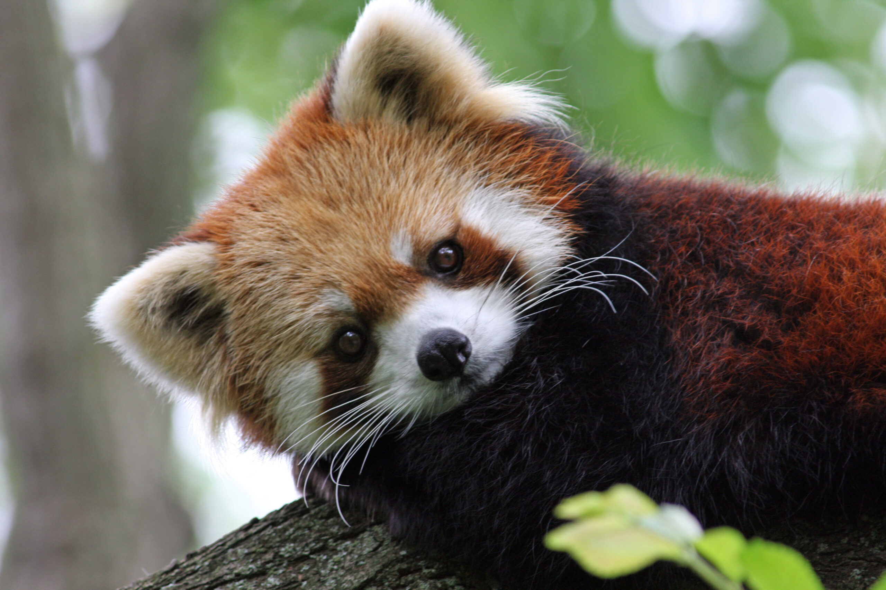
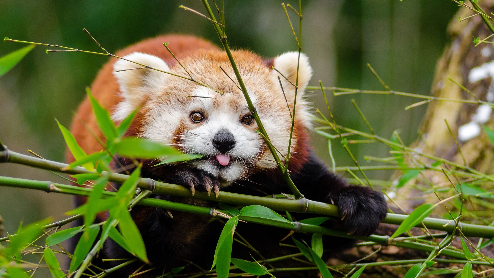
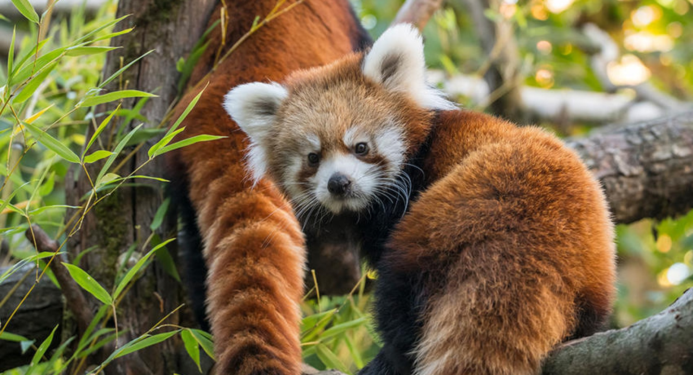
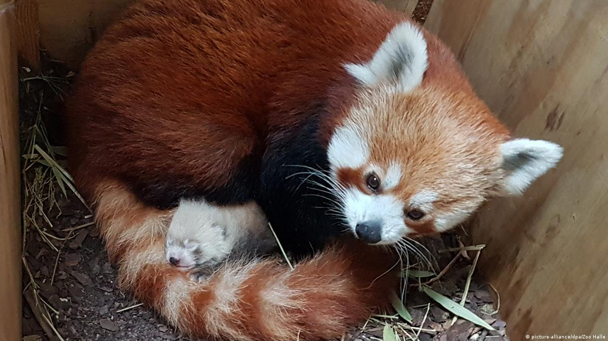

RED PANDA
-

The red panda is slightly larger than a domestic cat with a bear-like body and thick russet fur. The belly and limbs are black, and there are white markings on the side of the head and above its small eyes. Almost 50% of the red panda's habitat is in the Eastern Himalayas
-

Known for eating roots, succulent grasses, fruits, insects and grubs, and are known to occasionally kill and eat birds and small mammals
-

Red pandas are very skillful and acrobatic animals that predominantly stay in trees
-

Red panda mothers birth between one and four cubs. The Red Panda Mother Teaches their cubs how to climb trees, hunt for their food and stays very close to her cubs.